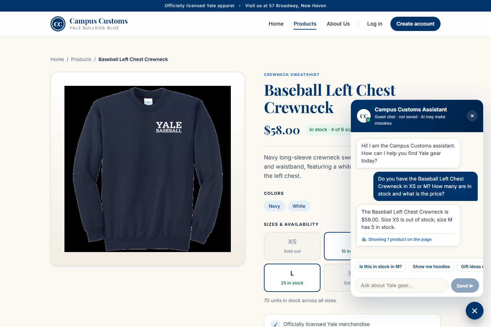
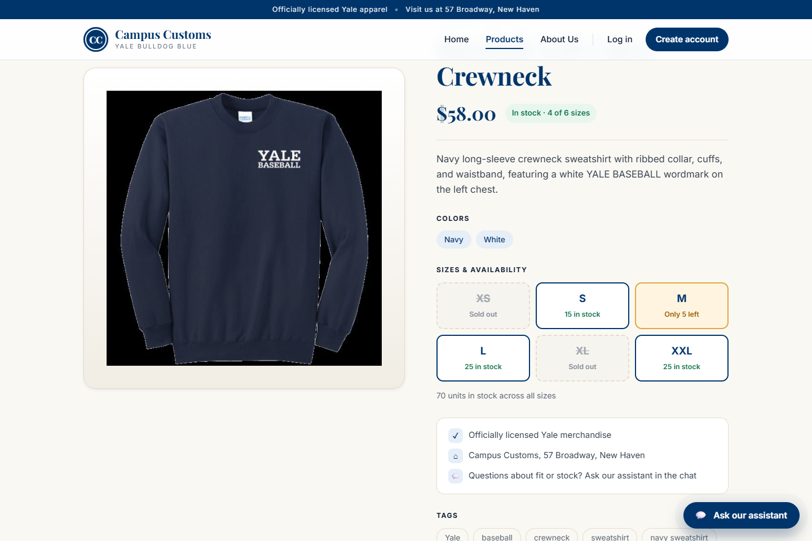
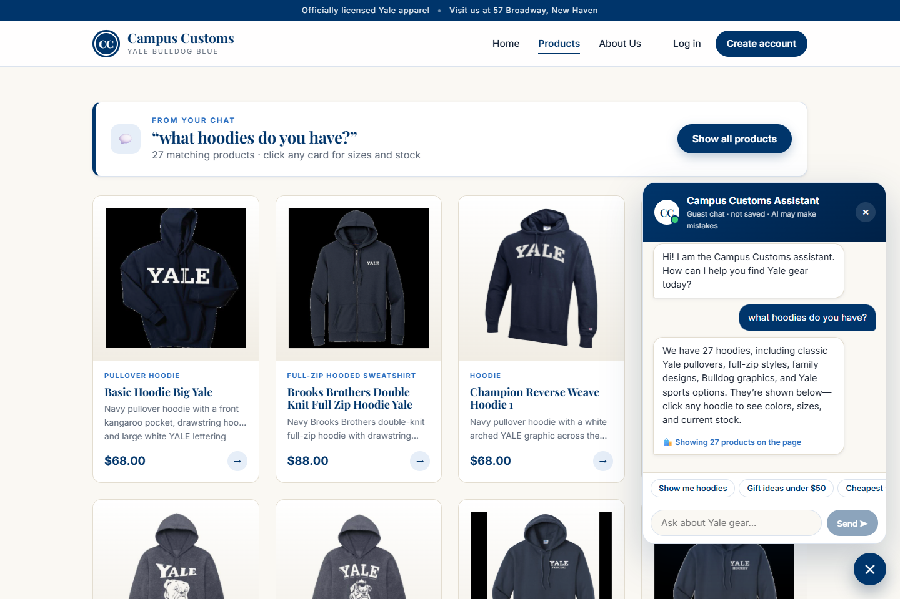
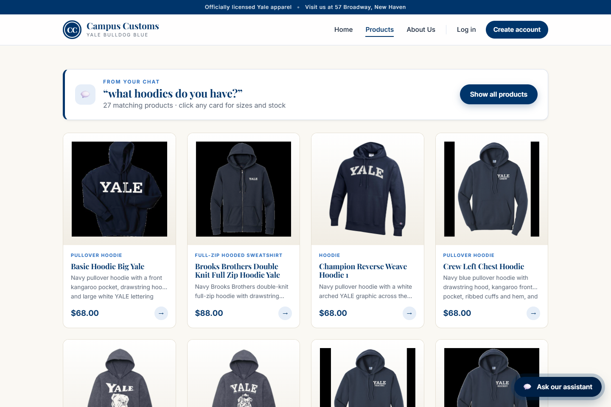
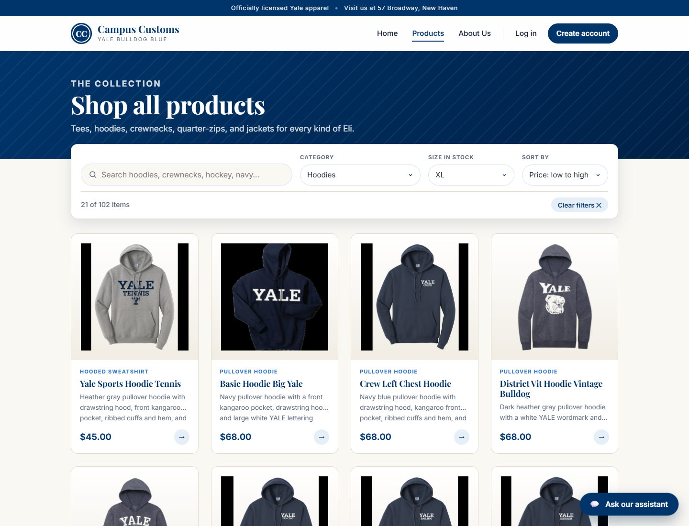
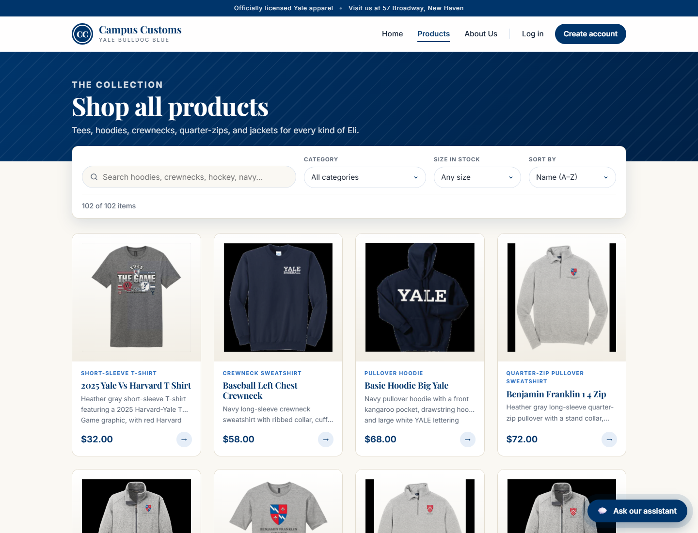

- Screenshots were taken automatically with Playwright (Microsoft Edge, headless), each as a fresh guest visitor, after waiting for the real AI agent reply.
- Every number shown was compared with
data/campus_customs.dbat capture time.
1. Chat checks the inventory level of a real item
PASSEDAsked in chat: "Do you have the Baseball Left Chest Crewneck in XS or M? How many are in stock and what is the price?" The agent replied "$58.00. Size XS is out of stock; size M has 5 in stock". This matches the database exactly (price 58.0, XS = 0, M = 5), including honestly reporting the sold-out size.


2. Dynamic search result cards after a category question
PASSED
After typing "what hoodies do you have?" on the Home page, the site switched to the Products page and showed 27 product cards under a "From your chat" banner, next to the agent's text answer.
The 27 cards are exactly the 27 hood-type products in the database. They come from the structured products list in the API response, not from parsing the reply text.


3. Usability feature (Problem 9): product filters and sorting
PASSEDOn the Products page, choosing Category = Hoodies, Size in stock = XL, and Sort by = Price: low to high narrowed 102 items to 21, sorted from $45.00 up to $88.00. The 21 products are exactly those the database lists as hoodies with XL quantity above 0.

